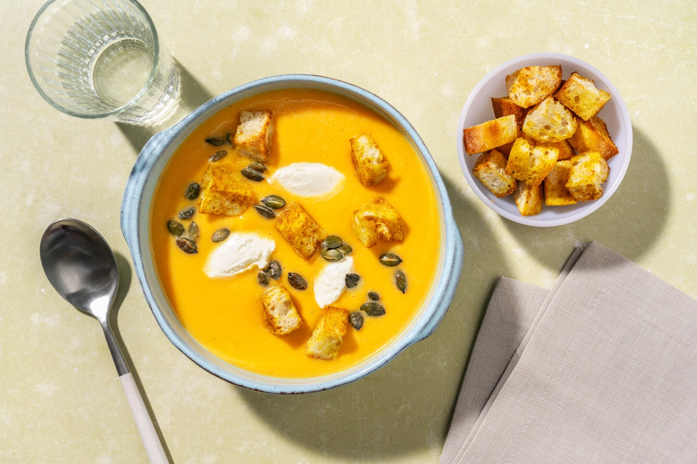
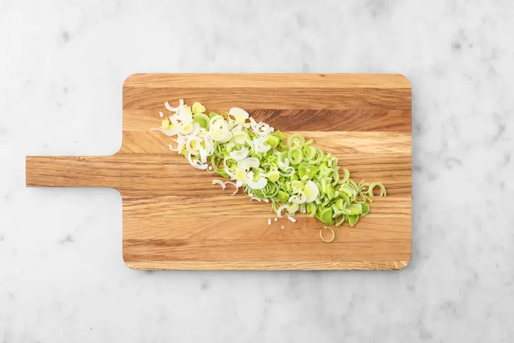
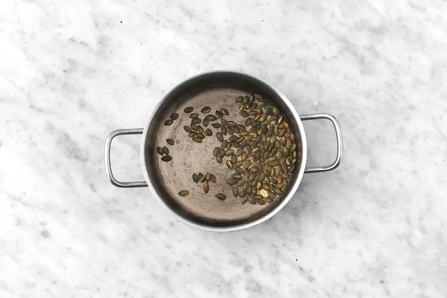
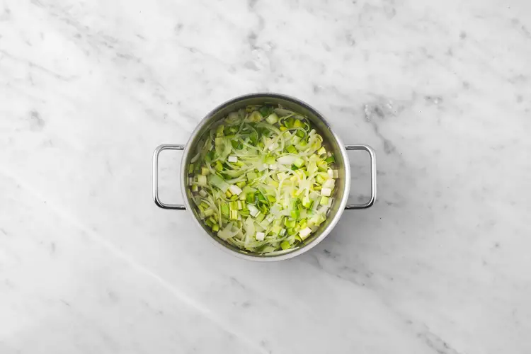
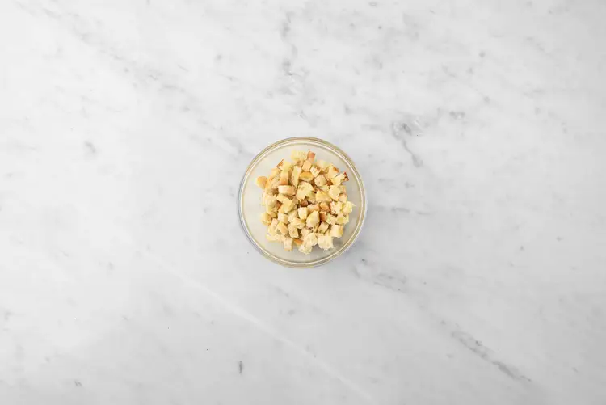
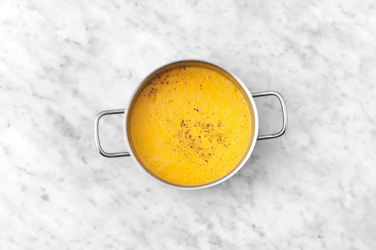
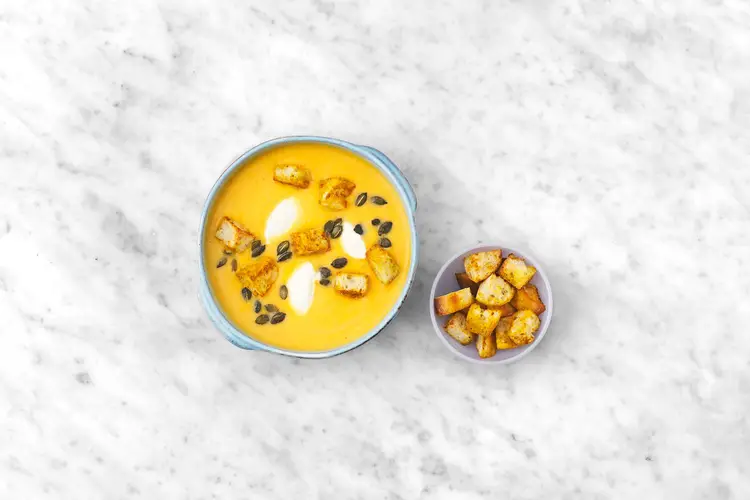

Crema de calabaza con pipas tostadas
21 FEBRERO, 2024

Instrucciones
- 5 unidad(es) Tomate
- 1 unidad(es) Cebolla
- 1 unidad(es) Zanahoria
- 1 unidad(es) Pimiento rojo
- 2 unidad(es) Pan de chapata
- 1 sobre(s) Tomillo seco
Primer paso
¡Asegúrate de utilizar las cantidades indicadas a la izquierda para preparar tu receta! Pela y pica finamente el ajo (ver cantidad en ingredientes). Pela la cebolla, divídela en dos y córtala en tiras finas. Retira las raíces y el extremo verde del puerro y deséchalos. Córtalo por la mitad a lo largo y, luego, corta en medias lunas finas.

Segundo paso
Calienta una olla a fuego medio-alto sin aceite y tuesta las semillas de calabaza 1-2 min, hasta que se doren. Luego, retira de la olla y reserva.

Tercer paso
Limpia la olla, luego, agrega un chorrito de aceite junto con el ajo. Calienta a fuego medio y cocina 1-2 min o hasta que se dore. Luego añade el puerro y la cebolla, salpimienta y cocina todo junto 5-6 min, removiendo ocasionalmente, hasta que empiecen a dorarse y a quedar transparentes.

Cuarto paso
Mientras tanto, abre el pan de chapata y tuéstalo en la tostadora hasta que esté dorado y crujiente. Cuando esté listo, corta el pan de chapata en dados de 2 cm y colócalo en un bol. Adereza con la mitad del curry en polvo, un chorrito de aceite y una pizca de sal y remueve.

Quinto paso
Cuando las verduras de la olla estén listas, agrega la calabaza y rehoga a fuego medio 1 min más. Añade el agua (ver cantidad en ingredientes), el curry en polvo restante y el caldo vegetal. Remueve y lleva a ebullición. Luego, cocina a fuego medio 12-14 min, hasta que la calabaza esté tierna. Tritura con un túrmix, hasta obtener una crema lisa. Luego, añade la mitad del queso crema, mantequilla, sal y pimienta al gusto y tritura de nuevo.

Sexto paso
En un bol, mezcla con varillas el queso crema restante con un chorrito de agua, de forma que quede menos espeso. Sirve la crema de calabaza en platos hondos y añade encima los picatostes al curry, el queso crema y las semillas de calabaza tostadas.
